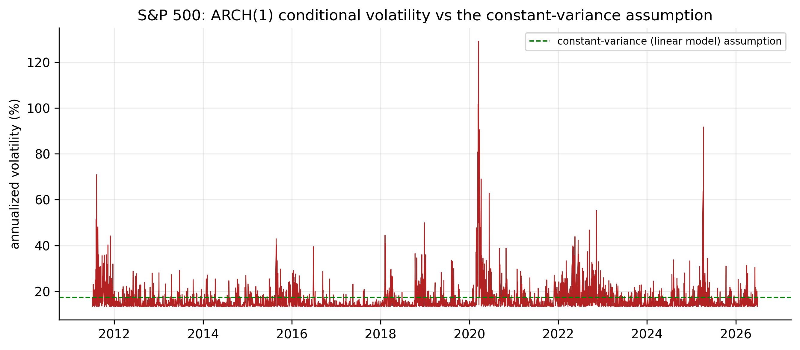
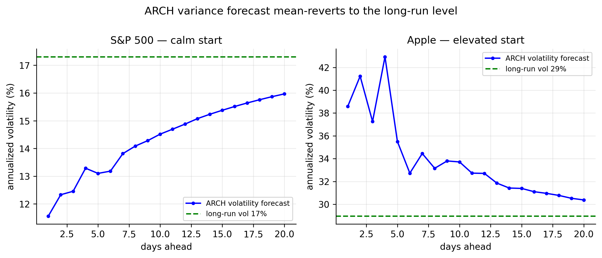

8 ARCH Models
Every model so far — AR, MA, ARMA, ARIMA — has modelled the conditional mean of returns, and every one has reached the same verdict: the mean of daily returns is barely forecastable. But those models all share a hidden assumption we never questioned, and it is wrong. They assume the shocks \(a_t\) have constant variance. This chapter shows, on our own data, that they do not — the variance of returns changes over time in a predictable way — and introduces the first model built to capture it: Engle’s ARCH model. This is the turn the whole book has been pointing toward: the predictability of these series lives not in the mean but in the variance.
8.1 How the linear models fail
A linear model leaves behind residuals \(\hat a_t = r_t - \hat\mu_t\). If the model were complete, those residuals would be white noise in every respect — not just uncorrelated, but independent. They are not. We already saw the tell in Figure 3.3: for the S&P 500 the residuals themselves are uncorrelated (the ACF is flat, so the mean model is adequate), yet their squares are strongly and persistently autocorrelated — the lag-1 autocorrelation of squared S&P returns is about \(0.44\) and stays high for many lags.
That single fact breaks the constant-variance assumption. Autocorrelation in \(\hat a_t^2\) means that a large shock today makes a large shock more likely tomorrow — the size of returns is predictable even though their sign is not. This is volatility clustering, and its formal name is conditional heteroskedasticity: the conditional variance is not constant. A model that assumes it is has failed to describe the data, no matter how well it fits the mean.
The failure is not subtle, and it is universal across our series. Engle’s ARCH-LM test makes it precise: regress the squared residuals on their own lags and test whether those lags matter (details in Section 8.3). The statistic is \(\chi^2_m\) under the null of no ARCH effect (constant variance); the \(5\%\) critical value for \(m=5\) lags is \(11.07\).
| Ticker | ARCH-LM statistic (\(m=5\)) | Constant variance? |
|---|---|---|
| AAPL | 345 | rejected |
| MSFT | 529 | rejected |
| AMZN | 80 | rejected |
| SPX | 1,125 | rejected |
| GLD | 246 | rejected |
| GCF | 160 | rejected |
Every statistic in Table 8.1 dwarfs the \(11.07\) threshold, most by one to two orders of magnitude. There is no series in our data for which the constant-variance assumption survives. The linear models are not wrong about the mean; they are simply silent about the variance, and the variance is where the structure is.
8.2 The conditional variance
To model this we separate the two things a linear model conflated. Write the return as its conditional mean plus a shock, and the shock as a time-varying volatility times a standardised innovation:
\[ r_t = \mu_t + a_t, \qquad a_t = \sigma_t\, \varepsilon_t, \qquad \varepsilon_t \sim \text{iid}(0, 1), \tag{8.1}\]
where \(\mu_t = E[r_t \mid \mathcal{F}_{t-1}]\) is the conditional mean (the ARMA part, which we now know is nearly constant) and \(\sigma_t^2 = \operatorname{Var}[r_t \mid \mathcal{F}_{t-1}]\) is the conditional variance — the object the ARCH model will specify. The innovation \(\varepsilon_t\) is iid with unit variance (standard normal, or later Student-\(t\)); all the time-variation lives in \(\sigma_t\), the conditional volatility.
The linear models of the previous chapters are exactly the special case \(\sigma_t = \sigma\) (constant). Figure 8.1 shows how far from constant \(\sigma_t\) actually is for the S&P 500 — the fitted conditional volatility ranges from a calm \(\sim\!12\%\) annualised to a COVID-crash peak near \(130\%\), while the linear models’ single flat assumption sits at about \(17\%\).

8.3 Testing for ARCH effects
Two standard tests detect conditional heteroskedasticity before you model it. The simplest is a Ljung–Box test on the squared residuals (Equation 3.4 applied to \(\hat a_t^2\)): a large statistic signals clustering. The purpose-built tool is Engle’s ARCH-LM test, which runs the auxiliary regression
\[ \hat a_t^2 = \alpha_0 + \alpha_1 \hat a_{t-1}^2 + \cdots + \alpha_m \hat a_{t-m}^2 + u_t, \tag{8.2}\]
and forms \(\text{LM} = T\!\cdot\!R^2\), which is \(\chi^2_m\) under the null of no ARCH effect. Rejecting means the squared shocks are predictable from their past — the defining feature of an ARCH process, and (as Table 8.1 showed) a certainty for our data.
library(FinTS) # Engle's ARCH-LM test
est_return <- function(sym) {
d <- read.csv(sprintf("data/%s.csv", sym)); d$Date <- as.Date(d$Date)
diff(log(d$Adjusted[d$Date <= as.Date("2026-07-01")]))
}
for (s in c("AAPL","MSFT","AMZN","SPX","GLD","GCF")) {
a <- est_return(s) - mean(est_return(s))
cat(s, " ARCH-LM:", round(ArchTest(a, lags = 5)$statistic, 0), "\n")
}
Box.test(est_return("SPX")^2, lag = 10, type = "Ljung-Box") # squared returnsimport pandas as pd, numpy as np
from statsmodels.stats.diagnostic import het_arch
def est_return(sym):
d = pd.read_csv(f"data/{sym}.csv", parse_dates=["Date"]).set_index("Date")
return np.log(d[d.index <= "2026-07-01"]["Adjusted"]).diff().dropna()
for s in ["AAPL","MSFT","AMZN","SPX","GLD","GCF"]:
a = est_return(s) - est_return(s).mean()
print(s, "ARCH-LM:", round(het_arch(a, nlags=5)[0], 0))8.4 The ARCH model
An ARCH model makes today’s variance a function of recent squared shocks: a big move makes the next variance large, so it reproduces volatility clustering.
Engle’s insight (1982) was to make the conditional variance an autoregression in the squared shocks. An ARCH(\(m\)) model specifies
\[ \sigma_t^2 = \alpha_0 + \alpha_1 a_{t-1}^2 + \alpha_2 a_{t-2}^2 + \cdots + \alpha_m a_{t-m}^2, \tag{8.3}\]
with \(\alpha_0 > 0\) and \(\alpha_i \ge 0\) (so the variance stays positive). The mechanism is exactly the volatility clustering we observed: a large shock \(a_{t-1}\) makes \(\sigma_t^2\) large, which tends to produce another large shock, and so on — storms beget storms, calm begets calm. The ARCH(1), \(\sigma_t^2 = \alpha_0 + \alpha_1 a_{t-1}^2\), is the building block.
Three properties matter.
Variance stationarity. The unconditional variance is finite and equal to
\[ \operatorname{Var}(a_t) = \frac{\alpha_0}{1 - (\alpha_1 + \cdots + \alpha_m)}, \tag{8.4}\]
provided \(\sum_i \alpha_i < 1\). The sum \(\sum_i \alpha_i\) is the persistence of volatility — how long a shock’s effect lingers.
Fat tails, for free. Here is a payoff that reaches back to Chapter 2. Even when the innovations \(\varepsilon_t\) are perfectly normal, an ARCH process has excess kurtosis — fatter tails than a normal — because it mixes periods of low and high variance. For an ARCH(1) with Gaussian innovations the kurtosis is \(3(1-\alpha_1^2)/(1-3\alpha_1^2) > 3\). This is the resolution of the puzzle from Chapter 2: the unconditional fat tails we measured are partly an artefact of time-varying volatility, not evidence that each day’s innovation is heavy-tailed. ARCH generates fat tails from Gaussian parts.
It captures clustering, not the mean. ARCH says nothing about the direction of returns; it models only their magnitude. The conditional mean is still the (nearly constant) ARMA part — ARCH is bolted onto the variance of the residuals.
8.4.1 Fitting ARCH to the S&P 500
We estimate the ARCH(1) by maximum likelihood on the S&P residuals. The fit is
\[ \sigma_t^2 = 7.1\times 10^{-5} + 0.40\, a_{t-1}^2, \tag{8.5}\]
so \(\hat\alpha_1 = 0.40\): about \(40\%\) of yesterday’s squared shock carries into today’s variance. The implied unconditional volatility, \(\sqrt{\alpha_0/(1-\alpha_1)} = 1.09\%\) per day, matches the sample standard deviation of \(1.09\%\) almost exactly — the model is well calibrated.
library(rugarch)
spec <- ugarchspec(variance.model = list(model = "sGARCH", garchOrder = c(1, 0)),
mean.model = list(armaOrder = c(0, 0)),
distribution.model = "norm") # ARCH(1) = GARCH(1,0)
fit <- ugarchfit(spec, est_return("SPX"))
fit # alpha0, alpha1
# check: standardized residuals should have no ARCH left
Box.test(residuals(fit, standardize = TRUE)^2, lag = 10, type = "Ljung-Box")from arch import arch_model
r = est_return("SPX") * 100 # arch package likes % returns
am = arch_model(r, mean="Constant", vol="ARCH", p=1, dist="normal")
res = am.fit(disp="off")
print(res.summary())
print((res.std_resid**2).autocorr(1)) # ~0: clustering removedThe proof that it works is in the standardised residuals \(\hat\varepsilon_t = \hat a_t / \hat\sigma_t\). If the ARCH model has captured the time-varying variance, these should be iid — in particular, their squares should no longer be autocorrelated. They are not: the lag-1 autocorrelation of the squared residuals falls from \(0.437\) (before, in the raw returns) to \(-0.029\) (after, in the standardised residuals) — essentially zero. The clustering that broke the linear models has been absorbed into \(\sigma_t\).
8.5 Choosing the ARCH order, and all six series
The ARCH(1) above was a deliberately simple illustration. In general we must choose the order \(m\), and we do it with tools that mirror AR identification (Section 3.5.2) — but applied to the squared residuals, because that is where the structure lives.
Read a candidate order from the squared-residual PACF. Under an ARCH(\(m\)), the squared shocks \(a_t^2\) behave like an AR(\(m\)): their PACF should be significant up to lag \(m\) and then cut off. So we look at the PACF of \(\hat a_t^2\) and count the spikes outside the \(\pm 1.96/\sqrt{T}\) band. Confirm with a criterion and a residual check. Fit ARCH(\(m\)) for a range of \(m\), pick the smallest BIC, then verify that no ARCH remains — the ARCH-LM test and the Ljung–Box test on the standardised squared residuals should both be insignificant. If they still reject, raise \(m\).
Here the data delivers a pointed message. The squared-return PACF does not cut off cleanly — it stays significant for five to eight lags in every series — and BIC keeps preferring higher orders (four to ten). The reason is persistence: a volatility shock lingers for weeks, and a model whose variance depends only on individual past squared shocks needs one term per week of memory. Fitting each series at its BIC-selected order:
library(rugarch)
fit_arch <- function(sym, m) {
spec <- ugarchspec(variance.model = list(model = "sGARCH", garchOrder = c(m, 0)),
mean.model = list(armaOrder = c(0, 0)), distribution.model = "norm")
ugarchfit(spec, est_return(sym))
}
# choose m by BIC, then read persistence sum(alpha) and check leftover ARCH
for (s in c("AAPL","MSFT","AMZN","SPX","GLD","GCF")) {
bic <- sapply(1:10, function(m) infocriteria(fit_arch(s, m))[2])
cat(s, " ARCH order (BIC):", which.min(bic), "\n")
}from arch import arch_model
def fit_arch(sym, m):
return arch_model(est_return(sym)*100, mean="Constant", vol="ARCH", p=m,
dist="normal").fit(disp="off")
for s in ["AAPL","MSFT","AMZN","SPX","GLD","GCF"]:
bic = [fit_arch(s, m).bic for m in range(1, 11)]
print(s, "ARCH order (BIC):", int(np.argmin(bic)) + 1)| Ticker | ARCH order (BIC) | \(\hat\alpha_1\) | persistence \(\sum\hat\alpha_i\) | uncond. vol | sample SD |
|---|---|---|---|---|---|
| AAPL | 8 | 0.15 | 0.61 | 1.83% | 1.79% |
| MSFT | 6 | 0.13 | 0.61 | 1.72% | 1.65% |
| AMZN | 4 | 0.23 | 0.59 | 2.25% | 2.07% |
| SPX | 6 | 0.14 | 0.79 | 1.09% | 1.09% |
| GLD | 7 | 0.09 | 0.63 | 1.08% | 1.06% |
| GCF | 10 | 0.04 | 0.62 | 1.10% | 1.09% |
Three things stand out in Table 8.2. First, the orders are high — four to ten — and gold-futures wants the full ten, meaning it would take even more. That is the empirical case against pure ARCH: it works, but only by spending many parameters to mimic persistence. Second, the implied unconditional volatilities match the sample standard deviations closely, so every fit is well calibrated. Third, the persistence differs by series: the S&P is the most persistent (\(\sum\hat\alpha_i = 0.79\)) — its volatility shocks decay slowest — while the single big \(\hat\alpha_1\) of the simple ARCH(1) has, in the full model, spread across many lags (for the S&P, \(\hat\alpha_1\) drops from \(0.40\) to \(0.14\) as the \(0.79\) total is shared out). Capturing that persistence with one extra parameter instead of ten is the whole motivation for GARCH.
8.6 Forecasting the variance
A volatility model earns its keep by forecasting volatility. The one-step-ahead variance forecast is known exactly from the data, \(\sigma_T^2(1) = \alpha_0 + \sum_{i} \alpha_i a_{T+1-i}^2\), and for longer horizons we replace each unknown future squared shock by its own forecast (since \(E[a_{T+\ell}^2 \mid \mathcal{F}_T] = \sigma_T^2(\ell)\)):
\[ \sigma_T^2(\ell) = \alpha_0 + \sum_{i=1}^{m} \alpha_i\, \widehat{a^2}_{T+\ell-i}, \qquad \widehat{a^2}_{T+k} = \begin{cases} a_{T+k}^2, & k \le 0,\\ \sigma_T^2(k), & k > 0.\end{cases} \tag{8.6}\]
As the horizon grows, this recursion mean-reverts to the unconditional variance \(\alpha_0/(1-\sum\alpha_i)\) (Equation 8.4). The forecast is therefore state-dependent: from a calm starting point it climbs toward the long-run level; from a turbulent one it decays back down. Figure 8.2 shows both cases from our July 1 origin — the S&P began calm, so its forecast volatility rises toward its \(17\%\) long-run level; Apple began elevated, so its forecast decays toward \(29\%\).

fit <- fit_arch("SPX", 6)
fc <- ugarchforecast(fit, n.ahead = 20)
sigma(fc) # forecast conditional volatility, 20 days aheadres = fit_arch("SPX", 6)
fc = res.forecast(horizon=20, reindex=False)
print(np.sqrt(fc.variance.values[-1])) # forecast conditional volatility8.6.1 What the variance forecast means for returns
A variance forecast is only useful once translated back into the language of returns. Because the conditional mean is essentially flat (Chapters 3–5), the \(h\)-step return forecast stays at the mean \(\mu\), but its prediction interval now breathes with the forecast volatility:
\[ r_{T+h} \;\in\; \mu \pm 1.96\,\sigma_T(h) \quad (95\%), \tag{8.7}\]
a band that is narrow when the market is calm and wide when it is turbulent, reverting to the constant-variance width as \(\sigma_T(h)\) reverts to the long-run level. This is the practical difference the whole chapter was for: the linear models’ interval was a single fixed width regardless of conditions; the ARCH interval adapts to today. It is also exactly the machinery behind Value-at-Risk — the one-day \(95\%\) VaR is \(\mu - 1.645\,\sigma_T(1)\), a number that changes every day as the volatility forecast updates.
The carousel makes the point across all six series. Each panel shows the return forecast with its adaptive ARCH 95% band (shaded) against the constant-variance band (red dashed), with the realised holdout returns.
The contrast is the message. On July 1 the S&P and Amazon were calm, so their ARCH bands start inside the constant-variance band — the model says “quiet conditions, tighter risk today” — then widen back toward it. Apple, Microsoft, and gold were elevated, so their ARCH bands start wider than the constant band — “recent turbulence, more risk today” — then narrow toward it. The realised holdout returns land inside the adaptive bands throughout. Where the linear models offered one fixed interval blind to conditions, ARCH delivers a conditional, self-updating measure of risk — the genuine payoff of modelling the variance, and the foundation for the Value-at-Risk work still ahead.
8.7 Limitations, and the road to GARCH
ARCH works, but Figure 8.1 reveals its weakness: the fitted volatility is spiky. Because \(\sigma_t^2\) depends only on a few recent squared shocks, it jumps up the day after a big move and falls back almost as fast — whereas real volatility rises and then decays slowly over weeks. To capture that persistence, a pure ARCH model needs many lags — exactly what Table 8.2 showed, where BIC demanded orders of four to ten (and gold-futures wanted still more). Many lags mean many parameters and a fragile fit. This is precisely the problem the GARCH model solves in the next chapter, by letting today’s variance depend on yesterday’s variance as well as yesterday’s shock — buying long, smooth persistence with just one extra parameter. ARCH is the idea; GARCH is the idea made practical.
8.8 Concept check
Decide first, then expand each answer.
Q1. An ARMA model fits the S&P returns well, but the ARCH-LM test on its residuals is strongly significant. What does this mean?
- (a) The ARMA model is wrong about the mean.
- (b) The residuals are uncorrelated but their variance changes over time (conditional heteroskedasticity) — the mean model is fine, the constant-variance assumption is not.
- (c) The returns are non-stationary.
- (d) The residuals are normally distributed.
(b). A significant ARCH-LM on residuals says the squared residuals are autocorrelated — volatility clustering — even though the residuals themselves are uncorrelated. The mean model succeeded; the variance needs its own model.
Q2. In the decomposition \(a_t = \sigma_t\varepsilon_t\) with \(\varepsilon_t \sim \text{iid}(0,1)\), what does the ARCH model specify?
- (a) The conditional mean \(\mu_t\).
- (b) The conditional variance \(\sigma_t^2\) as a function of past squared shocks.
- (c) The distribution of the returns’ sign.
- (d) The trend.
(b). ARCH models \(\sigma_t^2 = \alpha_0 + \sum_i \alpha_i a_{t-i}^2\). The mean is handled separately (by the ARMA part); ARCH governs the size of shocks, not their direction.
Q3. An ARCH(1) has \(\hat\alpha_1 = 0.40\). What does a large shock yesterday imply for today?
- (a) Today’s return will be large and positive.
- (b) Today’s variance is elevated (so a large move, in either direction, is more likely) — volatility clustering.
- (c) Nothing; ARCH ignores past shocks.
- (d) Today’s return will be large and negative.
(b). \(\sigma_t^2 = \alpha_0 + 0.40\,a_{t-1}^2\): a big \(|a_{t-1}|\) raises today’s variance, making a big move of either sign more likely. ARCH predicts magnitude, not direction.
Q4. An ARCH(1) is driven by perfectly normal innovations. Its unconditional return distribution is:
- (a) exactly normal.
- (b) fat-tailed (excess kurtosis \(>0\)), because it mixes low- and high-variance periods.
- (c) uniform.
- (d) thin-tailed.
(b). Mixing variances produces excess kurtosis even from Gaussian parts — which is why the fat tails of Chapter 2 are partly a volatility-clustering artefact, not proof of heavy innovations.
Q5. Why does a pure ARCH model often need many lags to fit real volatility well?
- (a) Because volatility is constant.
- (b) Because \(\sigma_t^2\) depends only on recent squared shocks, so it reacts sharply but decays fast; capturing slow, persistent volatility needs many lags — the problem GARCH fixes.
- (c) Because the mean is hard to fit.
- (d) Because returns are normal.
(b). ARCH volatility is spiky; real volatility persists for weeks. Many ARCH lags can approximate that but at a heavy parameter cost — GARCH adds a lagged-variance term to get smooth persistence cheaply.
Q6. From a calm starting day, an ARCH variance forecast several weeks ahead will:
- (a) stay at today’s (low) level forever.
- (b) rise and mean-revert toward the series’ long-run (unconditional) variance.
- (c) fall to zero.
- (d) grow without bound.
(b). The forecast recursion (Equation 8.6) reverts to \(\alpha_0/(1-\sum\alpha_i)\). From a calm start it rises toward the long-run level; from a turbulent start it decays toward it. That is why the ARCH return interval is narrow today when calm and widens back to the constant-variance width.
- Linear (ARMA/ARIMA) models capture the conditional mean but assume constant variance — an assumption the data rejects: squared residuals are strongly autocorrelated, and ARCH-LM rejects for every series (Table 8.1).
- Order is chosen from the squared-residual PACF and BIC, checking no ARCH remains; here it lands high (4–10) because volatility is persistent (Table 8.2).
- The variance forecast mean-reverts to the long-run level (Equation 8.6), so it is state-dependent — rising from calm, decaying from turbulence.
- Translated to returns, this gives an adaptive prediction interval (Equation 8.7) — narrow when calm, wide when turbulent — the basis of Value-at-Risk.
- Model the shock as \(a_t = \sigma_t\varepsilon_t\) (Equation 8.1), separating the (near-constant) conditional mean from the time-varying conditional variance \(\sigma_t^2\).
- ARCH(\(m\)) (Equation 8.3) makes \(\sigma_t^2\) an autoregression in past squared shocks, reproducing volatility clustering; it is variance-stationary when \(\sum\alpha_i<1\) and generates fat tails even from Gaussian innovations.
- Fitted to the S&P, ARCH(1) has \(\hat\alpha_1=0.40\) and removes the clustering (squared-residual autocorrelation \(0.44 \to -0.03\)).
- ARCH volatility is spiky; capturing real, persistent volatility parsimoniously is the job of GARCH, next.